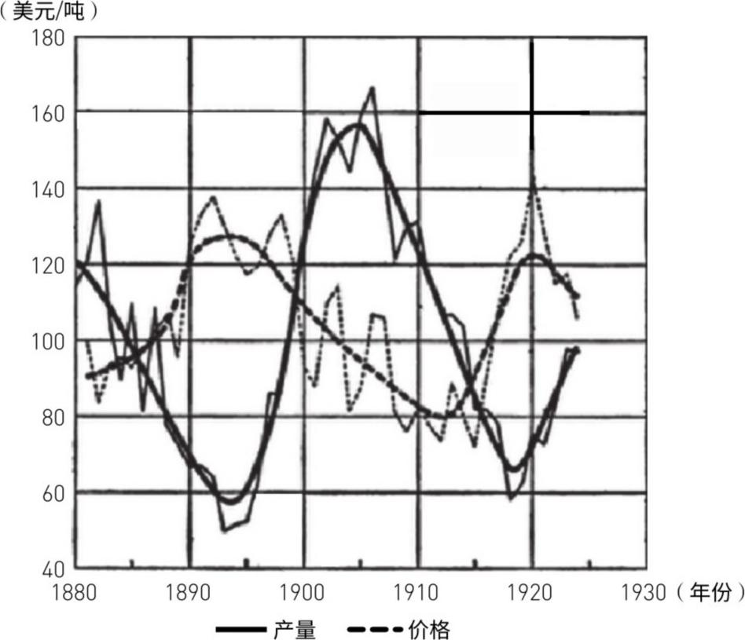

12 康波中的房地产周期研究
房地产周期和商品周期、技术周期最大的不同：它不同步——每个国家有自己的节奏。但这不意味着各国房地产周期是独立的。房地产周期的传递链条：主导国（美国）→外围国（英法德）→追赶国（中国）→附属经济体/资源国。这个传递顺序就是理解全球房地产周期、商品周期和美元周期的钥匙。
底层逻辑：技术创新→主导产业→房地产（最核心的增长载体）。房地产滞后于技术，是技术革命的"引致增长"——先有技术创新，再有产业扩张，然后才有人进城买房。这个链条在国家间按顺序传递。
关键发现：1890年以来的实际房价周期，平均时长25-30年。一个康波（60年）里有两个房地产周期——一强一弱。上行期平均8.5年，下行期平均17年（跌的时间是涨的两倍）。启动于康波繁荣期的周期更长（31年），启动于衰退期的更短（21年）。
本轮房地产周期：1995年启动→2006年美国见顶→2012年B浪反弹→最终大底2020-2025年，历时25-30年。2012年以后的反弹不是新牛市，是大下行中的反弹而已。



康波阶段决定房地产周期的"烈度"：
① 繁荣/回升期启动 → 强周期：涨49%+，跌29%+。新技术扩散快→产业扩张→人口涌入→置业需求猛→投机资本推波助澜。
② 衰退/萧条期启动 → 弱周期：涨23%，跌13%。
本轮（1995年启动）是强周期：美国涨了71%，跌了32.5%——都超平均水平。下一次2020-2025年启动的将是弱周期（启动于萧条期）。


房地产→产能的领先链条：房地产先启动→3到7年后产能周期跟进。逻辑：有人买房→需要钢材水泥→矿山扩产→产能周期启动。本轮：1995年房地产启动→2002年商品产能爆发（中国房改+加入WTO）。
中周期（朱格拉）塑造房地产周期内部的"短节奏"：中周期上行=房价反弹期，中周期下行=房价回落到下跌。2009年中周期启动→2012年房价B浪反弹。2015年中周期见顶→2017-2019年房价进入C浪下跌。中周期2019年见底→房价2020-2025年见终极大底。


房地产周期像波浪一样在全球传递：
美国（主导国）先启动→英法（外围国）跟进→中国（追赶国）接力→新加坡/巴西（附属/资源国）最后。
本轮传递时间线：美国1995年启动→2006年见顶。中国2000年启动→2014/2016双头→2017-2019年进入下行。新加坡/巴西2003-04才启动，还在后面。


本章最核心的预测：2017-2019年，中美两大经济体房地产业将同时进入下行期。这不是小级别的调整——是两个全球最大经济体房地产周期的C浪共振下跌。叠加2016年康波正从"衰退"切换到"萧条"→中美房地产双杀可能成为压垮全球经济的最后一根稻草，加速康波萧条的来临。